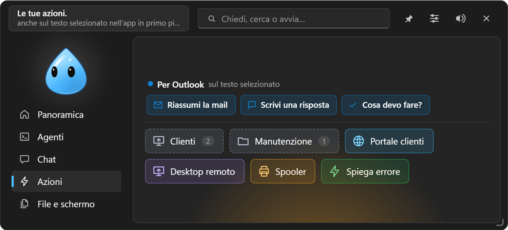
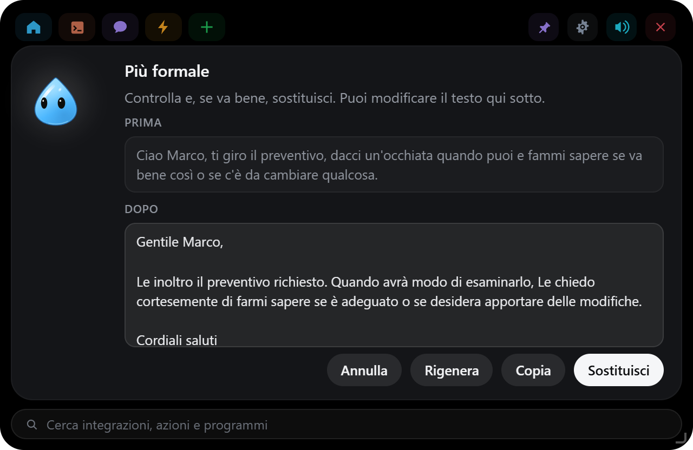

Azioni rapide e scorciatoie
Pulsanti per link, programmi, script e domande all'AI; suggerimenti per l'app in uso; il menu sul testo selezionato.

#Tipi di azione
Impostazioni → Azioni rapide crea i pulsanti della scheda ⚡:
| Tipo | Cosa fa |
|---|---|
| Chiedi alla chat | Manda un prompt salvato, applicato al testo copiato, al testo selezionato o al file rilasciato, oppure il punto della giornata di oggi o di domani dalle integrazioni (con qualcosa da aggiungere, se vuoi). Con {{campi}} nel testo diventa un modello da completare |
| Script | Comandi PowerShell o del Prompt dei comandi, nascosti, con l'output nell'isola (con Interrompi, timeout 5 minuti). Parte solo dopo un clic; con «Chiedi conferma» mostra prima i comandi |
| Programma / cartella | Avvia un programma con i suoi argomenti (es. mstsc /v:server01) o apre una cartella |
| Link | Apre un indirizzo nel browser |
| Tasti | Preme una combinazione di tasti nell'app in uso (per la barra dell'app in uso) |
Ogni azione ha icona (oltre 150 disegnate nel codice, oppure Automatica: per un link la favicon del sito, per un programma la sua icona; un link o un programma nuovo la prende da solo finché non ne scegli un'altra), colore, cartella, scorciatoia e si riordina con ↑ ↓. Con più di 8 azioni compare Cerca un'azione.
Le azioni si eseguono anche da /nome in chat, dal campo in alto dell'isola, dalle automazioni, dalla chat stessa («lancia il backup») e da Telegram. Le azioni appartengono al profilo.
#Suggerimenti per l'app in uso
In cima alla scheda ⚡ compaiono azioni pronte per l'app che stai usando, applicate al testo selezionato:
- Outlook: Riassumi la mail, Scrivi una risposta;
- Excel: Spiega questi dati;
- Word: Correggi, Rendi più formale;
- browser: Riassumi, Traduci;
- editor di codice: Spiega, Trova bug;
- terminale: Spiega l'errore;
- Teams, PDF e qualsiasi altra app: Riassumi, Traduci, Correggi.
EasyIsland copia la selezione, apre la chat con il testo allegato e poi rimette negli appunti quello che c'era.
#Menu sul testo selezionato
Seleziona un testo in qualunque programma e premi Win+Alt+A: compare un menu al mouse con le tue azioni rapide che lavorano sul testo, con le cartelle come sottomenu. Con Notion attivo ci sono anche Nota in Notion e Attività in Notion.
#Sostituisci
Quando un'azione riscrive il testo (correggi, traduci, rendi formale), l'isola mostra prima e dopo con Sostituisci, Rigenera, Copia e Annulla. Sostituisci incolla al posto della selezione solo se la finestra e il testo sono ancora gli stessi, e mantiene la formattazione (grassetti, elenchi, stili di Word e Outlook).

#Scorciatoie globali
| Scorciatoia | Cosa fa |
|---|---|
| Ctrl+Space | Apre l'isola |
| Ctrl+Alt+K | Chat con quello che hai copiato |
| Ctrl+Alt+H | Cronologia degli Appunti |
| Ctrl+Alt+Shift+S | Riquadra e chiedi |
| Ctrl+Alt+Shift+R | Testo selezionato nella Raccolta, con la sua fonte |
| Ctrl+Alt+Shift+P | Richiesta in attesa (N, Y, S, 1–9) |
| Ctrl+Alt+Shift+T | App della sessione in primo piano |
| Win+Alt+A | Menu sul testo selezionato |
| Integrazione successiva, suoni sì / no | Da assegnare |
| Ogni azione | La sua, se gliela dai |
Per cambiarne una: clic sul campo e premi la combinazione (Esc annulla, Canc la toglie). Se è già usata da un'altra app, le Impostazioni lo segnalano.
#La barra dell'app in uso
Per ogni programma puoi scegliere le azioni da mostrare accanto al personaggio chiuso quando quel programma è in primo piano: per esempio in Outlook «Rispondi con l'AI» e un'azione Tasti per archiviare. Si configura in Impostazioni → Azioni rapide.